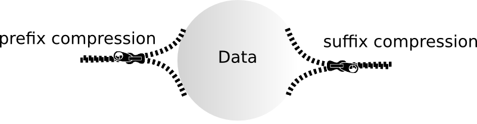

Minimization¶
The purpose of minimization is to compress the data by finding equal states which can be re-used instead of writing a new state.
keyvi Minimization¶
Minimization is implemented using a hash table. Each state that is written, is inserted into the hash table. Before persisting a new state, we try to find a equal state in the hashtable.
Code:
Entry point of minimization: sparse_array_builder
Minimization hashtable: minimization_hash
The Hashtable in keyvi has a very small footprint of 12 bytes per entry.
Getting best compression ratios¶
Minimization/Compression is dependent on the data. FSA’s are mainly used in computational linguistics, one of the reasons: FSA’s make use of high ambiguity in languages.

Prefix compression¶
Therefore having “natural language keys” yields compression, both at prefix as well as suffix side. “Binary keys”, e.g. fingerprints, are pretty bad in terms of compression.
Note that Prefix compression is basically the same as in a trie.
Suffix and value compression¶
In contrast to a trie the FSA compresses suffixes as well. But note: The value is part of the suffix, as it is attached to the “final state”. Therefore sparse values will yield best results while having totally unique values will result in no suffix compression.
Improving compression rate / Reducing Size¶
Normalize keys to gain better prefix compression.
Think about your values, reduce the version space if possible. For example: if you store integer values, think about their range. Normalizing the integers reduce the number of unique values and therefore improve the compression ratio.
Take minimization into account: permutations and repetitions are a strength of the algorithm, e.g. storing tons of almost identical keys pointing to the same value. In other data structures this can cause huge memory usage, FSA’s are good in minimizing that.
Check questions¶
You want to write a Date Extractor which can extract all dates of the fomat “YYYY-MM-DD”. Estimate the size requirement.
Now assign a counter(incremented each time) to each key. What happens? What about your size estimate?